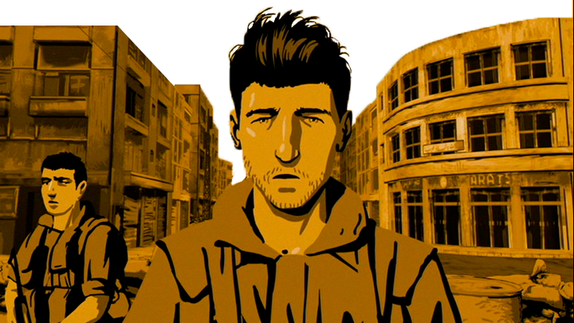
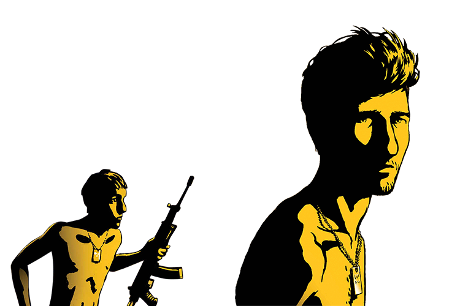

MAX RICHTER
Max RICHTER, né le 22 mars 1966 à Hamelin en Allemagne, est un compositeur de musique classique et électronique contemporaine. Il est rattaché au mouvement post-minimaliste. Il a notamment composé les musiques des films “Ad Astra” ou encore “l’Oeuvre sans auteur”.
Il a composé la bande original du film “Waltz with Bashir”. La musique douce utilisée contraste énormément avec le sujet du film qui est extrémement violent. De plus, il a utilisé différentes mélodies revisitées d’anciens compositeurs classiques tel que Bach, Schubert ou encore Chopin et sa célébre valse. Le tout donne une musique très calme qui se remarque bien lors du film et elle est omniprésente dans toute les scènes importantes.
ARI FOLMAN
“Valse avec Bachir” est un traumatisme, ou plutôt un film sur le traumatisme, celui de Ari Folman lui même. Le personnage principal est donc le réalisateur et il est représenté au cours des différente périodes importantes de sa vie.
En effet, le réalisateur a été engagé à 19 ans dans une guerre qui n’est pas la sienne, celle que mène Israël au Liban face à l’OPL, l’Organisation de libération de Palestine. Cet été 1982, la violence et les morts ont été progressivement oubliés par Ari Folman. Après toutes ces années, le réalisateur cherche à reconstituer, à nommer ces événements si douloureux qui ont été lentement refoulés.
WALTZ with BASHIR
Valse avec Bachir “Vals im Bashir” est un film documentaire d'animation réalisé par Ari Folman et sorti en 2008. Ce film a reçu de nombreux prix dans le monde, tels que le Golden Globe Award du meilleur film étranger ou le César du meilleur film étranger.
